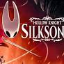

| Cím | Szerző |
|---|---|
| The Pariah | Anthony Ryan |
| The Martyr | Anthony Ryan |
| The Traitor | Anthony Ryan |

Hollow Knight is a challenging, hand-drawn 2D action-adventure game where you play as the Knight, exploring the vast, ruined insect kingdom of Hallownest to uncover its ancient mysteries and fight its corrupted inhabitants.
Hollow Knight: Silksong is the epic sequel to Hollow Knight, the award winning action-adventure. Journey to all-new lands, discover new powers, battle vast hordes of bugs and beasts and uncover secrets tied to your nature and your past. Discover the fallen insect kingdom of Pharloom!
Team Cherry is a small indie games team in Adelaide, South Australia. Our mission is to build crazy and exciting worlds for you to explore and conquer. Publisher of Hollow Knight and Hollow Knight: Silksong